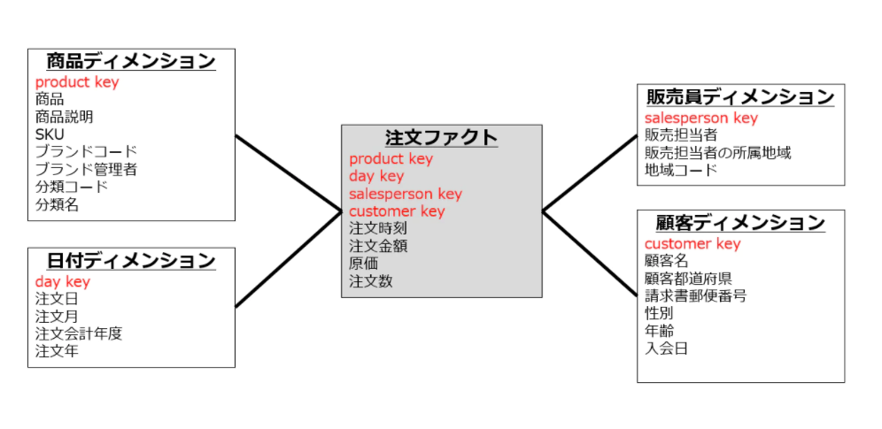

DMBOK勉強の殴り書きメモです。参照データとマスタデータについて。
参照データとマスタデータ
-
DAMAホイールとは？
- データガバナンスを行うために必要な分野をまとめたもの

-
マスタデータと参照データの定義
-
参照データ
- 他のデータ（マスタデータ含む）を特徴づける、関連づけるデータ
- 分類
- 注文状況：新規、処理中、キャンセル
- 外部情報
- 国コード：US、JPN、DE
- 外部情報との関連づけるために使われるデータ
- 国コード：US、JPN、DE
- 分類
- 他のデータ（マスタデータ含む）を特徴づける、関連づけるデータ
-
マスタデータ
- ビジネスに紐づくような主要業務の対象であるデータ
- 組織情報：従業員、ベンダー、顧客情報等
- もの・サービス：商品、製品、中間品等
- ビジネスに紐づくような主要業務の対象であるデータ
-
トランザクションデータ
- 企業の情報システムなどが扱うデータの種類の一つで、業務に伴って発生した出来事の詳細を記録したデータ
- 日々、追加・更新が発生
- 更新は各ユーザが行う
- 参照データやマスタデータは基本的に管理者が行うもの
- 企業の情報システムなどが扱うデータの種類の一つで、業務に伴って発生した出来事の詳細を記録したデータ
-
スタースキーマでいうところのディメンション表が参照データ、マスタデータにあたり、ファクト表がトランザクションデータと思っている。（図の参照元）

-
-
マスターデータ管理の意義、目的
- 組織のデータ要件のため
- 完全で最新で一貫性がある信頼出来るデータで分析しなければ意味がない
- データの品質管理
- データ不整合や不良、欠落を避ける
- データ統合のコスト管理
- マスターデータがない場合のデータソース統合はコストが掛かる
- リスクの低減、削減
- データ共有アーキテクチャの簡素化、リスク、並びにコストが下がる
- 組織のデータ要件のため
-
マスターデータ管理の指針
- 共有データ：参照データとマスターデータは組織全体で共有できるように管理
- データ所有権：参照データとマスタデータは組織に属して特定アプリケーションや部門には属さないようにする
- 品質：データ品質の監視とガバナンスを効かす
- スチュワード：業務データの生成元のデータスチュワードは参照データの品質を管理して保証するために責務を負う
- 変更管理
- 変更時にはプロセスを経て変更する。承認フロー、及び関係者への伝達、配信等。
-
MDM要件の評価に必要なもの
- どの役割、組織、場所、物が繰り返し参照されているか
- 人、組織、場所、物を記述するためにどのデータが使われているか
- どのようにデータが定義され構造化されているか。これにはデータの粒度も含まれる
- どこでデータが作成／収集され、保存され、利用可能になり、アクセスされるか
- データが組織内のシステムを移動する際にどのように変化するか
- 誰がどのような目的でデータを利用するのか
- データとそのソース品質と信頼性を理解するためにどのような基準が使われるか